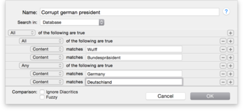

|
|
Smart group editor |
|
The Smart Group Editor appears as a sheet when you either create a new smart group using Data > New > Smart Group , when you right-click a smart group and choose Edit from the contextual menu, or when you double-click a smart group.  In this sheet you set up a new smart group or edit an existing one:
The list of predicates consists of a list of blocks, each beginning with "All" or "Any", defining whether all (Boolean AND) or any (Boolean OR) of the contained predicates need to be true for the document to be returned as a result. Predicates themselves consist of the field to search (like "Content" or "Tag"), and the condition and the data that needs to be matched.
Use the + and - buttons to add more predicates to your smart group or to delete them. Hold the ⌥ modifier key and click a ... button to create a "compound predicate," also called "branch". Predicates can be in/outdented and rearranged via drag-and-drop. By adding more lines to a search and choosing between "All" and "Any" you graphically create a nested Boolean query with ANDs, ORs, and parenthesis.
Predefined smart groups When you create a new database, DEVONthink Pro Office adds a number of predefined smart groups for your convenience:
By default, the following smart groups are added to the sidebar :
|